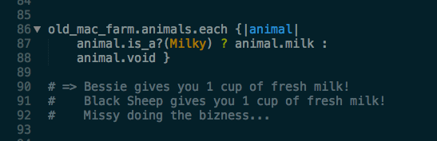

Old MacDonald on Classes, Inheritance and Modules
Old MacDonald had a farm. But before we sing the song, we need to build it.
Eating and pooping are facts of life. Many differnt life forms that may or may not be on Old MacDonald's farm will need to do these things. So - we will extract eating and pooping from the Animal class, and create an In_n_Out module that we can use and reuse.
Now let's make the Animal class. Old MacDonald and his assorted animals will all be members of the Animal class. Each animal has got something to say, stored in the SAY constant hash. Each animal will eat and poop, because we include the In_n_Out module. Each animal has a name, a type, and a belly. We'll be able to view each of those instance variables with our attribute readerfunction, and each instance of Animal is assigned those variables when initialized.
And that instance method Animal#with_a - wanna guess what it does?
Let's instantiate Old MacDonald, and have him sing a little for us.
Some of our animals will give milk, so let's make a Milky subclass of Animals. Milky will inherit all of the content from the Animal class, but will contain an additional instance method of Milky#milk. Check it out.
Let's instantiate 3 animals, of which 2 are Milky.
Old MacDonald's ready for a Farm. Farm will be its own class which will designate an instance varible of farmer, and store an array of animals. And we'll instantiate old_mac_farm.
Wanna milk a cow?
Oops... the animals have to feed first. Here we go!
The animals have eaten. Hoorah. Now we'll milk them if they milk. But as for Missy the chicken... she's just gotta do her bizness.

Old MacDonald worked so hard for his milk. He deserves to put it in his belly.
All's well on the farm. So let's sing it out loud!